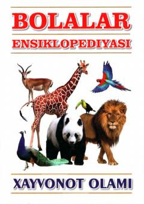

XOSuv osti olami va dengiz jonivorlari haqidagi bolalar ensiklopediyasi.
Ushbu bolalar ensiklopediyasi suv osti dunyosi, jumladan aktiniyalar, korallar va boshqa dengiz jonivorlarining hayot tarzi, tuzilishi hamda tabiatdagi o'rni haqida qiziqarli ma'lumotlar beradi. Kitobda jonivorlarning tasnifi, oziqlanishi va ko'payish jarayonlari tushunarli tilda bayon etilgan.